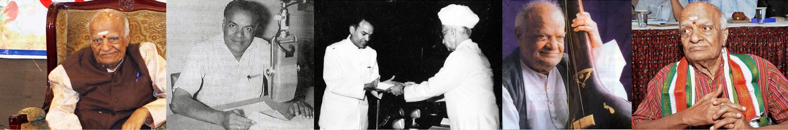

Balantrapu Rajanikanta Rao marked his entry into Telugu Cinema as Lyricist as well as Music Director
Here's the list of few
- Bhale Pelli and Tarumaru
- Swargaseema (1945) (songs and music) directed by B. N. Reddy (the popular song 'Oho pavurama' and 'Oho tapodhana sundara')
- Perantalu (music) directed by T. Gopichand
- Lakshmamma Katha
- Gruhapraveesam – produced by Sarathi Pictures and directed by T. Gopichand
- Manavathi (1952) – directed by Y. V. Rao
- Rajamakutam (1959) and Bangaru Papa (1954) directed by B. N. Reddy
Let's dive into the ocean of classical music by Rajani
| Name | Song | Name | Song |
|---|---|---|---|
| Jaabilli Vastunnaadu - Vinjamuri Sisters - RAJANI | ontiga uyyalaluugitiva - Basavaraju Apparao - RAJANI | ||
| vanalona - VIPRANARAYANA - Balamurali - Gopalaratnam | tuluva manasaye - VIPRANARAYANA - Balamurali - KrishnaRajani | ||
| VIPRANARAYANA - A part of A I R drama - KRISHNA-RAJANI | naa viina ruthi - Venkob - RAJANI | ||
| Prabhanjana giithi (May 1990) - Suribabu - RAJANI | gana gana ganta mrogindanta - RAJANI | ||
| Hala Sathavahana - Yakshaganam - Rajani | Lalitha Sangitam Rajani Radio Talk | ||
| VISWAYAANAM - ADI KALPAADI - RAJANI | niivu lekaye preyasii - RAJANI | ||
| Padara Cheyi Cheyi Kalipi - A I R Group Song - RAJANI | naa viina ruthi mroyagaa - RAJANI - PGR Prasad | ||
| Intinti mungita - Dipawali - RAJANI - Manchala | DEEPAWALI - RAJANI - VENKOB | ||
| RAJANI 95 BIRTHDAY CELEBRATIONS | Baava Baava Bus - RAJANI | ||
| daari chupuvade leka - RAJANI | madhura yamini - RAJANI | ||
| Aakaasam ettuna kunkuma raasi - RAJANI | Madhujharulave - A Tribute to RAJANI - Divya R T | ||
| MANA PREMA - Shreya Ramnath - RAJANI | swapna jagathilo chaya vina - RAJANI | ||
| ADI KAPAADI (VISWAYAANAM) - Sheya Ramnath - RAJANI | Raave Raave Nava Varsha - light music song of RAJANI | ||
| yamuna tira vanamulo - yadavalli Indira Devi - RAJANI | IDE JOTHA NIIKIDE JOTHA - TANGUTURI SURYAKUMARI - RAJANI | ||
| vrudhayaa sandhya samiira laasyam - P. B. Srinivas - Manchala - RAJANI | niititoa aareadi kaadea - RAJANI | ||
| merise mabbula lono - RAJANI - Pingali Surya Prabhakara Rao | nidurapo - RAJANI - Pingali Prabhakara Rao | ||
| Manjula Ganamu - A tribute to RAJANI - Mahalakshmi Kumari - Divya RT | yamunatira vanamulo - RAJANI - Pingali Prabhakara Rao | ||
| koncheme soke nano - Ravindra Sangeet - RAJANI | Harivillu - Light Music Song of Rajani | ||
| RAJANI 98th BIRTHDAY (29-01-2018) Part - 3 | RAJANI 98th Birthday Part - 2 (29-01-2018) Vijayawada | ||
| RAJANI 98th Birthday Part - 1 (29-01-2018) Vijayawada | SWATANTRA BHARATHA JANANI - composition of RAJANI | ||
| Rajani Aathma Katha Vibhavari - Book Release - Vishakha - 2012 - Part 1 | Rajani Aathma Katha Vibhavari - Book Release - Vishakha - Part 2 | ||
| Rajani Aathma Katha Vibhavari - Vishakha - 2012 - Part 3 | bhoomadhya rekha py - Rajani - All India Radio | ||
| Anjalide Manavotthama - RAJANI - All India Radio | Bhattu - Rajani - Pratibha Murthi - 2001 - Bhimavaram | ||
| SUBHADRA VIJAYAMU (SUBHADRAARJUNIYAM) - RAJANI | sugriva vijayamu - yakshagaanam - Rajani & Oleti | ||
| Anjalide Gayakotthama - Tribute to RAJANI - Mahalakshmi Kumari - Divya RT | NINGIKI NELAKU INDRA DHANASSU - RAJANI | ||
| MELUKONAVO MAADU JANMA BHOOMI - RAJANI | EDURU CHOODADA MADI ENNAALLOO - RAJANI | ||
| nateswarunakive namassulu - Venkob - RAJANI | raagade raadhika - Venkob - RAJANI | ||
| konda konalo - B R Venkob - RAJANI | ghanaa ghanaa - B R Venkob - RAJANI | ||
| maheswari mahakali - B R Venkob - RAJANI | khangana kinkini - Venkob _ RAJANI | ||
| nede vasantudade dwarana - RAJANI & Balamurali | aadaga manasounu - B R Venkob - RAJANI | ||
| roda seyake tummeda - Lakshmi Narasamma - Kalaga Krishna Mohan - RAJANI | anjalide manavottama - Surekha Murthy - Kalaga Krishna Mohan - RAJANI | ||
| raave sakhii madhuvanikii - Malladi Suribabu - Kalaga Krishna Mohan _ RAJANI | padara cheyi cheyi kalipi - RAJANI | ||
| janani hey bhuvana mano mohini - Shreya Ramnath - RAJANI | aaku pacchani aaku aatalo - B R Venkob - RAJANI | ||
| virahanalampu badha - Balasaraswathi Devi - RAJANI | mula sthambhalu - RAJANI | ||
| vande matharam - Bankim Chandra Chatterjee - Rajani & Bhanumathi | Ganadhipa - RAJANI | ||
| chayalake radaye - RAJANI | aadikaavyaavataranam - The Birth Of An Epic - RAJANI | ||
| NAVAGRAHA SWARUPUDOW NARAYANUNAKU NATULU - Malladi Brothers - RAJANI | hayilonela yedakinta himsa - Malladi Suribabu - RAJANI | ||
| prabodha ekadasi - eemaasapu paata - A-I-R.- Nov 1997 - Inter veiw & song - RAJANI - RAJANI | o mahaatma o maharshi - Sri Sri - Rajani - Tanguturi Surya Kumari | ||
| chalam kalam velugulu - A. I. R. feature - 1971 | oke desam oke praja - A I R feature - RAJANI | ||
| nunu manchu sonalo - RAJANI composition | mana bhaaratha ratha kethanamuna - RAJANI composition | ||
| nanuchuchi navvere - Srirangam Gopalaratnam - RAJANI composition | haayiga paadudunaa - S. Rjeswara Rao - RAJANI | ||
| natanamadave mayuri - Balasaraswati Devi - RAJANI | mukkoti kantthalu - T Surya Kumari - RAJANI | ||
| chinnadoyi - T Surta Kumari - RAJANI | swapna jagati lo - T Surya Kumari - RAJANI | ||
| evaru vinnarevaru kannaru - Surya Kumari - RAJANI | paapaayi gurram jeji mamayya paatalu RAJANI | ||
| paapaayi buvva jeji mamayya paatalu RAJANI | donga pilli jeji mamayya paatalu RAJANI | ||
| chitti chitti regi pallu Jeji Mamayya paatalu RAJANI | Abbayi Mamidi Chettu - Geya Rupakam - RAJANI | ||
| Bhimasena Vijayamu Yakshaganam RAJANI | RAJANI - Telugu Cinema - Swarga Seema | ||
| RAJANI - Telugu Cinema - Vipranarayana | August 15, 1947 A I R, Madras - Telugu song - RAJANI - Suryakumari | ||
| Megha Sandesam - Sanskrit Musical Play - RAJANI | idu kanaso daiva maayo - Kannada light music - RAJANI | ||
| eenu maato idu sullu hogi - Kannada light music - RAJANI | chitikela layalo chinukulu raalu - Jeji Mamayya - RAJANI | ||
| kondamidi suridu - - Jeji Mamayya Paatalu - RAJANI | A I R feature - Rabindra sangeet - RAJANI | ||
| sangita gangotri - A I R Feature - RAJANI | Godavari - konda nundi kadali daakaa - A I R feature - RAJANI | ||
| RAJANI - talk on two of his compositions | etthare bhaarataambaku swarna haarathi - RAJANI composition | ||
| chandamama botulo - jeji mamayyapaatalu - RAJANI | kappala badi - jeji mamayya paata - RAJANI | ||
| karra gurram - jeji mamayya paatalu - RAJANI | kaagitapu padava - jeji mamayya paatalu - RAJANI | ||
| didikku - jeji mamayya paatalu - RAJANI | mudu chakrala cycle - jeji mamayya paatalu - RAJANI | ||
| sitakoka chiluka - jejimamayya paatalu - RAJANI | vankara tinkara so - jeji mamayya paatalu - RAJANI | ||
| Paala pitta - jeji mamayya paatalu - RAJANI | kaaru shikaaru - jeji mamayya paatalu - RAJANI | ||
| gaali padaga - jeji mamayya paatalu - RAJANI | baatu nestham - jeji mamayya paatalu - RAJANI | ||
| chedugudu - jeji mamayya paatalu - RAJANI | aata vidupu - jeji mamayya paatalu - RAJANI | ||
| vennela reyi shikaaru - jeji mamayya paatalu - RAJANI | udutha - jeji mamayya paatalu - RAJANI | ||
| tenetigala paata - jeji mamayya paata- RAJANI | chettu kottagaa - jeji mamayya paatalu - RAJANI | ||
| chengu chenguna yeguruthave - jeji mamayya paatalu - RAJANI | burada loni pandi - jeji mamayya paatalu - RAJANI | ||
| adavi - jeji mamayya paatalu - RAJANI | ugaadi - jeji mamayya paatalu - RAJANI | ||
| taayilam jeji mamayya paatalu RAJANI | Mroyimpu Jayabheri & Udayammayenu - group song - A.I.R. - Rajani | ||
| chimalu doorani chittadivi - Jeji Mamayya Paatalu - RAJANI | Buruku Burikilu - Jeji Mamayya Paatalu - RAJANI | ||
| Dobuchi Dobuchi - Jeji Mamayya Paatalu - RAJANI | Kaaki Kaaki Haash - Jeji Mamayya Paatalu - RAJANI | ||
| Prabhata Sooktham RAJANI AIR talk Tagore | Dr. Balantrapu Rajanikanta Rao - Birthday 31 Jan 2015 - Part - 4 | ||
| Dr. Balantrapu Rajanikanta Rao Birthday - Jan. 31 2015 - Part - 3 | Dr. Balantrapu Rajanikanta Rao Birthday -31 Jan 2015 - Part 2 | ||
| Dr. Balantrapu Rajanikanta Rao Birthday Function - 31 Jan. 2015, Vijayawada Part - 1 | RAJANI VIBHAVARI - Jan. 31, 2015 | ||
| Pallaki Paata - Jeji Maamayya Paatalu - RAJANI - Venkob R Balantrapu | madhu vana swapna dola RAJANI mruduravali | ||
| musi pai valapu vantena & omkaaram - RAJANI | mroyimpu jayabheri & udayammayenu - RAJANI - Birmingham 1984 | ||
| swara lahari lola -RAJANI - Birminhham 1984 | sandhyaruni - RAJANI - Birmingham 1984 | ||
| konda valulo - Dr. Balantrapu Rajanikanta Rao | ammaro - composition of Dr. Balantrapu Rajanikanta Rao | ||
| aashaa naa prana sakhi - Oleti Venkateswarlu - RAJANI | evaru vinnaru - RAJANI - Birmingham 1984 | ||
| kulukaka nadavaro - Annamacharyulu - RAJANI - Birmingham 1984 | indara munnaramu - annamacharya - RAJANI - Birmingham 1984 | ||
| Birmingham 1984 - Suryakumari, RAJANI & satapatra sundari | chuda chuda manikyalu - Annamacharyulu - RAJANI - Birmingham 1984 | ||
| RAJANI sings at 93 - merapo velugo chudu | ATHIDHISAALA - KRISHNA SASTRY & RAJANI | ||
| DIBBAROTTI ABBAYI (1960's) Jeji mamayya paatalu - Dr. Balantrapu Rajanikantha Rao | RAJANI - Telugu Ravindra Sangeetam - O NAA CHITTAMA | ||
| RAJANI - Telugu Ravindra Sangeet - YEVARU KEKA VINI RAKAPOYINA | chemodpulu - (1948) - tribute to Mahatma Gandhi - Dr. Balantrapu Rajanikantha Rao | ||
| oyi mahaatyaagi - (1948) - tribute to Mahatma - Dr. Balantrapu Rajanikantha Rao | prathi shruthi - Dr. Balantrapu Rajanikantha Rao - Birmingham (1984) | ||
| neeli ningi - Birmingham (1984) - Dr. Balantrapu Rajanikantha Rao | mrogindoy Bharata bheri - (1952) - composition of RAJANI | ||
| Dr. Balantrapu Rajanikantha Rao - Birmingham (1984) | Okka Telugu Paata - Birmingham (1984) - Dr. Balantrapu Rajanikantha Rao | ||
| sagunade - (1955) - light music composition of Dr. Balantrapu Rajanikantha Rao | maadi swatantra desam - composition of Dr. Balantrapu Rajanikantha Rao | ||
| swami nee aalayamuna - composition of Dr. Balantrapu Rajanikantha Rao | Meow Meow Pilli - Jeji Mamayya Paatalu - Dr. Balantrapu Rajanikanta Rao | ||
| Chedugudu - Jeji Mamayya Paatalu - Dr. Balantrapu Rajanikanta Rao | Bhogi Pallu - Jeji Mamayya Paatalu - Dr. Balantrapu Rajanikanta Rao | ||
| Bommala Koluvu - Jeji Mamayya Paatalu - Dr. Balantrapu Rajanikanta Rao | Bongaram - Jeji Mamayya Paatalu - Dr. Balantrapu Rajanikanta Rao | ||
| Udutha Udutha Oosh - Jeji Mamayya Paatalu - Dr. Balantrapu Rajanikanta Rao | Chali Chali Chali Chali Chamakka - Jeji Mamayya paatalu - Dr. Balantrapu Rajanikanta Rao | ||
| ne cheyunadi ne cheyanidi - 1984 - Birmingham - Dr. Balantrapu Rajanikanta Rao | mroyimpu jayabheri & udayammayenu - 2 compositions of Dr. Balantrapu Rajanikanta Rao | ||
| Levayya Le Swami - composition of Dr. Balantrapu Rajanikanta Rao | Dr. Balantrapu Rajanikanta Rao's contribution to Telugu cinema Volume -7 | ||
| Dr. Balantrapu Rajanikanta Rao's contribution to Telugu cinema Volume - 6 | Dr. Balantrapu Rajanikanta Rao's contribution to Telugu cinema - Volume - 5 | ||
| Dr. Balantrapu Rajanikanta Rao's contribution to Telugu cinema Volume - 4 | Dr. Balantrapu Rajanikanta Rao's contribution to Telugu cinema Volume - 3 | ||
| Dr. Balantrapu Rajanikanta Rao's contribution to Telugu cinema - Volume - 2 | Dr. Balantrapu Rajanikanta Rao's contribution to Telugu cinema - Volume - 1 | ||
| Dr Balantrapu Rajanikanta Rao - Talk - A I R. | Ye Revulo Yekkevura- RAJANI | ||
| Desha Varali (1983) Orchestral Composition of RAJANI | Adi Kalpaadi (VISWAYAANAM) - RAJANI - live programme - Birmingham (1984) | ||
| O Vibhavari - Dr. Balantrapu Rajanikanta Rao - Birmingham (1984) | challagalilo - rajani - live programme - Birmingham -1984 | ||
| SHYAMALA DANDAKAM (Devotional) RAJANI | Surya Sthuthi (1956) Traditional - RAJANI | ||
| marunimusame - Light Music Composition of RAJANI | pasidi merungula (1948) - Light Music Composition of RAJANI | ||
| satapatra sundari (1942) - Telugu Light Music Composition of Rajani | O Vibhavari Oho Vibhavari (1942) composition of RAJANI | ||
| CHALAM - inter view by RAJANI (1972) Part - 2 | CHALAM - inter view by RAJANI (1972) Part 1 | ||
| viswayaanam (1975) A Tribute to Cosmic Order - composition of RAJANI (part - 2) | viswayaanam (1975) - A Tribute to Cosmic Order - composition of RAJANI (part - 1) | ||
| maadi swatantra desam (1948) - composition of RAJANI | manasoune .. (1958) light music composition of RAJANI | ||
| challa gaali lo .. (1942) RAJANI |